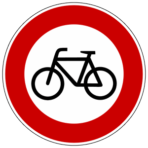

Zeichen 254
Verbot für Radverkehr

4 Tatbestände dazu
141175Sie benutzten als <Radfahrer/Führer eines Elektrokleinstfahrzeugs> den Verkehrsbereich, obwohl dieser für Sie durch Zeichen <250/254> gesperrt war.
25 €
141176
Sie benutzten als <Radfahrer/Führer eines Elektrokleinstfahrzeugs> den Verkehrsbereich, obwohl dieser für Sie durch Zeichen <250/254> gesperrt war und behinderten +) dadurch Andere.
30 €
141177
Sie benutzten als <Radfahrer/Führer eines Elektrokleinstfahrzeugs> den Verkehrsbereich, obwohl dieser für Sie durch Zeichen <250/254> gesperrt war und gefährdeten +) dadurch Andere.
35 €
141178
Sie benutzten als <Radfahrer/Führer eines Elektrokleinstfahrzeugs> den Verkehrsbereich, obwohl dieser für Sie durch Zeichen <250/254> gesperrt war. Es kam zum Unfall
40 €